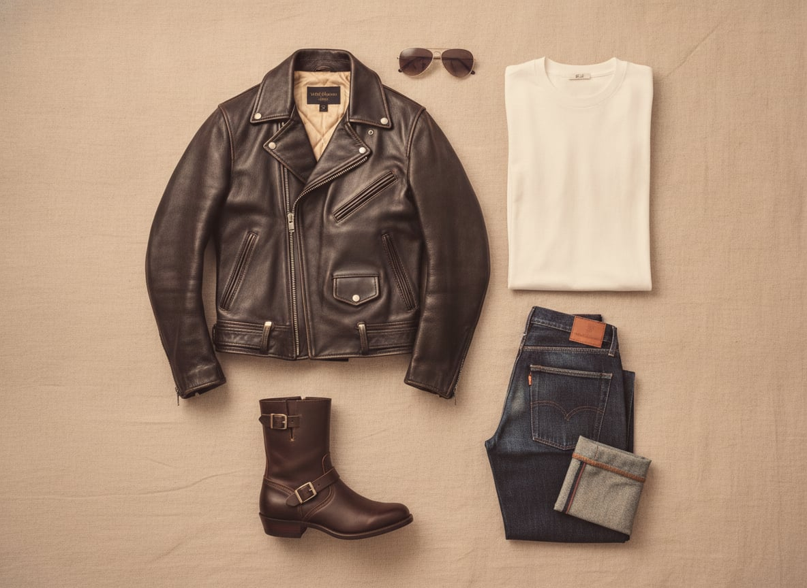
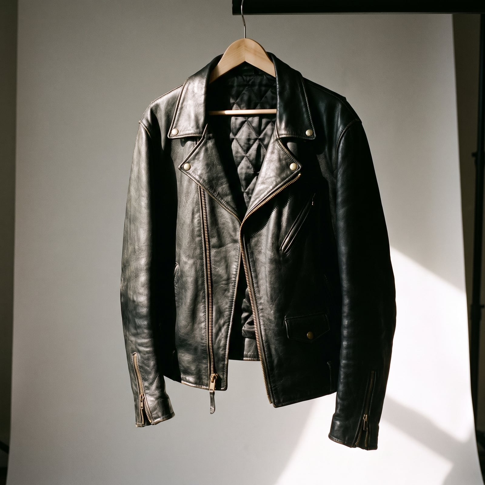
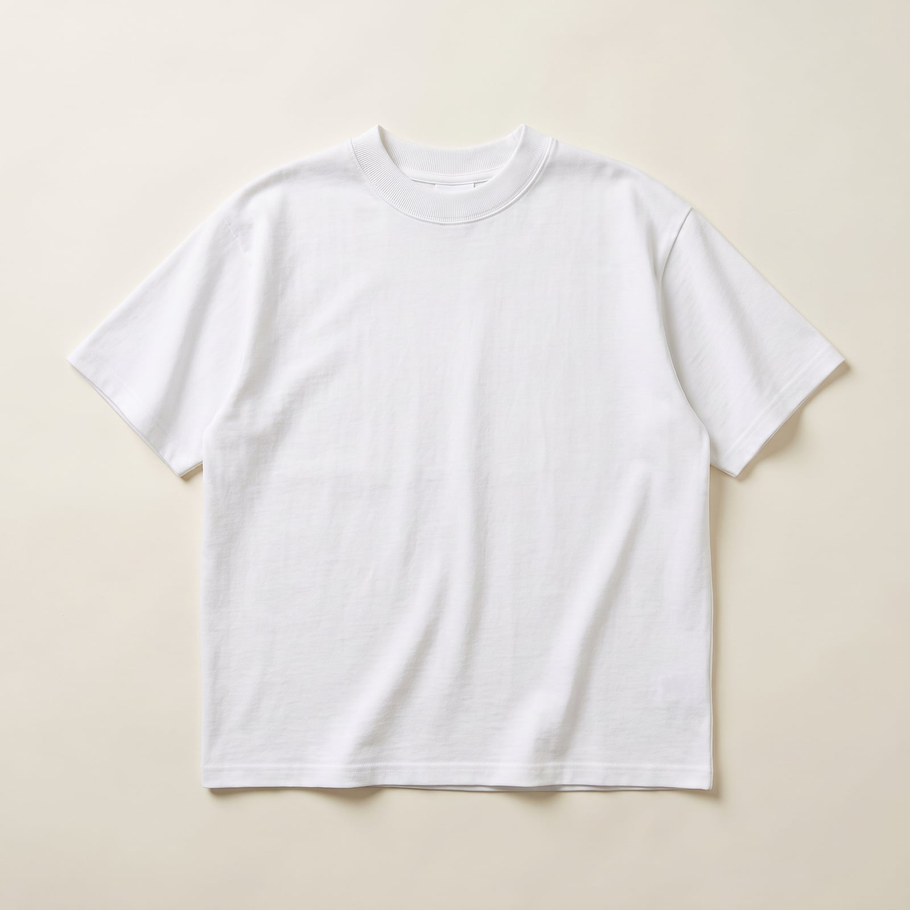
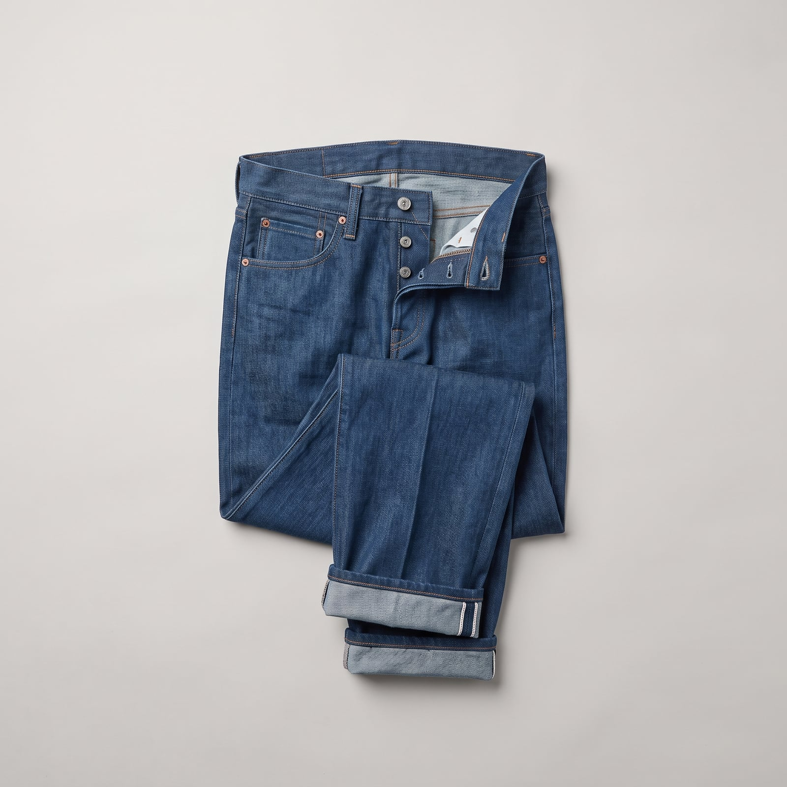
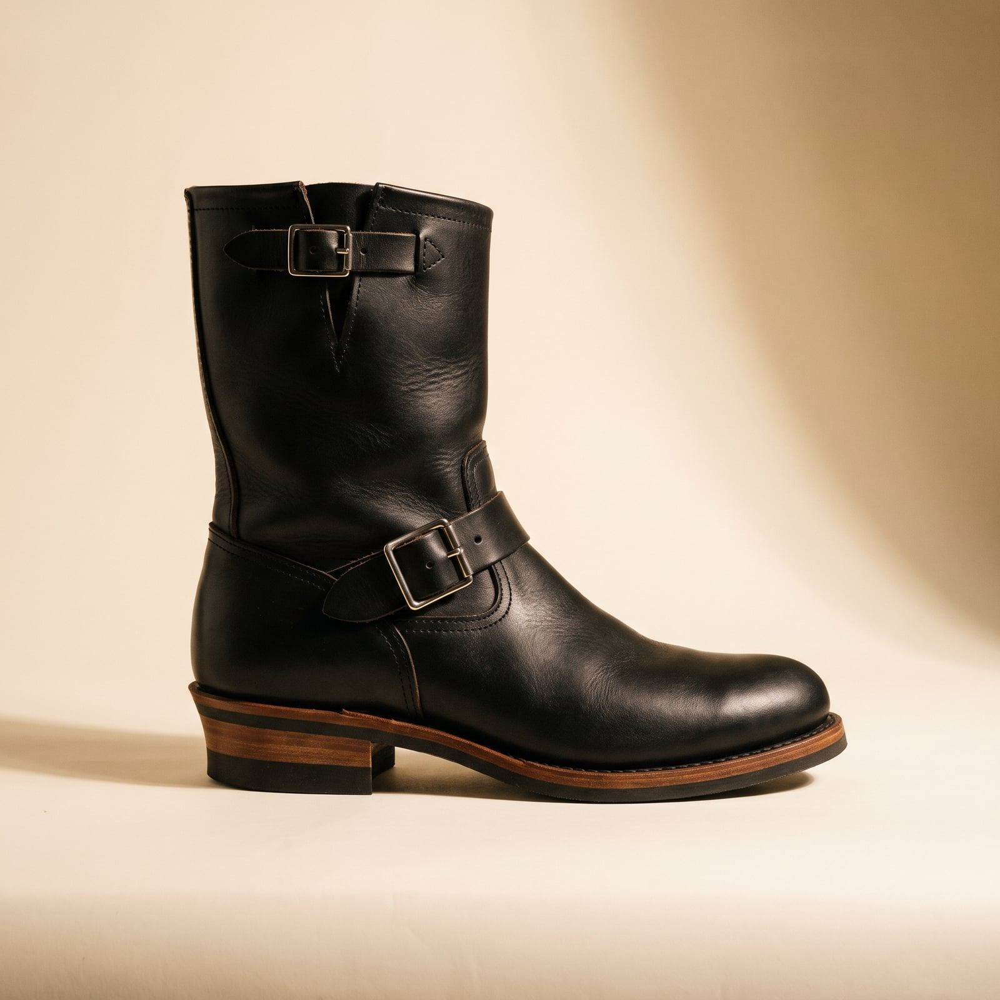

The Rebel
The look was fixed for good in 1953, when Marlon Brando pulled on a black Schott Perfecto motorcycle jacket for “The Wild One” and gave an entire decade of restless teenagers something to borrow from. James Dean did the same for denim two years later, and by the time Elvis Presley brought a pompadour and a curled lip to television, the pieces — leather, white tee, blue jeans, engineer boots — had assembled themselves into a uniform for anyone who wanted to look like the rules didn't apply to them, whether or not that was actually true.
The trademarks are simple because the point was always simple: asymmetrical zippers and a snap collar on the jacket, a plain white tee underneath doing the real work, jeans cuffed high enough to show the boot. Nothing about it needed accessorizing, because the whole outfit was already an accessory to an attitude.
It suits people who'd rather look a little dangerous than a little dull — who understand that the leather jacket's real function was never warmth, it was posture. There's an earnestness underneath the pose, though: this look has never once been about indifference to how you're perceived. It's about controlling exactly how.
- A black leather motorcycle jacket, asymmetrical zip, snap collar
- A plain white T-shirt, doing more work than it looks like
- Selvedge denim cuffed high enough to show the boot
- Engineer boots or motorcycle boots, buckled rather than laced
- A hairstyle with real ambition — the pompadour never fully left


The Leather Motorcycle Jacket
Schott NYC's Perfecto, created in 1928 and made famous by Marlon Brando in 1953's 'The Wild One,' set the template: an asymmetric zip (originally so the cold metal wouldn't sit against the rider's chest), a snap collar, and a belted waist.
Real leather construction, thinner hide than the heritage makers.
Shop this →Heavier horsehide, built to the wearer's own measurements.
Shop this →
The Plain White Tee
The white T-shirt only became outerwear rather than underwear in the public imagination after Brando and James Dean wore it alone under a jacket — before that, showing a bare tee in public was itself mildly scandalous.
Genuine heavyweight cotton at the lowest possible price.
Shop this →Heavier loopwheeled or combed cotton with a more considered fit.
Shop this →Reproduction 1950s construction on vintage loopwheel machines.
Shop this →
The Cuffed Selvedge Denim
Cuffing the jean high enough to show both the boot and a flash of selvedge became standard practice once Japanese reproduction denim made the selvedge edge itself worth displaying rather than hiding.
Real or close-to-real selvedge at an accessible price.
Shop this →A specific vintage reissue cut close to the 1950s original.
Shop this →Heavyweight Japanese selvedge, some of the most obsessively made denim available.
Shop this →
The Engineer Boot
Built originally for railroad engineers who needed a boot that could be kicked off quickly in an emergency, the buckled, strapped design became a biker staple for exactly the same practical reason.
Genuine strap construction at an accessible price.
Shop this →Built to order in the Pacific Northwest, resoleable indefinitely.
Shop this →Fully custom leather, last, and hardware.
Shop this →The Aviator Sunglasses
Originally designed for U.S. Army Air Corps pilots in 1936 to cut high-altitude glare, the teardrop aviator frame got its rebellious civilian afterlife largely through the same postwar biker and Hollywood culture that fixed the rest of this wardrobe in place.
The actual military-derived design, still made by the original licensee.
Shop this →American-made to actual military spec, supplied to the U.S. Air Force.
Shop this →Original glass-lens pairs from before the brand's production moved overseas.
Shop this →Buy the leather jacket in genuine leather, sized close through the body — it's meant to look slightly tough to move in, not roomy, and a boxy fit undercuts the whole silhouette. Let the white T-shirt be genuinely plain and well-fitted; it's doing more structural work in this outfit than it looks like, and a logo or graphic on it undermines the point.
Cuff the jeans high enough to actually show the boot — the proportion is deliberate, not an accident of a too-short hem — and let the leather jacket and boots earn a real patina rather than staying pristine.
Don't buy the version of this wardrobe that's been pre-distressed and branded within an inch of its life — a leather jacket with a large logo, or jeans with fashion-rip placement rather than honest wear, reads as costume rather than the genuinely lived-in uniform this is supposed to be. The whole look depends on looking like it predates the wearer noticing it's a 'look' at all.
This is a deliberately unceremonious wardrobe, and dressing it up defeats the purpose — a black-tie event or a corporate office is the one setting this outfit can't answer; the point of the style is precisely that its wearer wouldn't RSVP to either.
The leather jacket gets left on the bike, replaced by just the white tee and cuffed denim -- the boots stay on regardless of season.
A heavier shearling-lined version of the same leather jacket, thermal layers underneath the tee, and gloves built for actually gripping handlebars in the cold.
Leather handles light rain fine; for anything heavier, a waxed canvas layer goes over it, and the boots get treated beforehand rather than after.
The leather jacket generally stays parked along with the bike; a heavier flannel-lined denim jacket and insulated boots take over until the roads clear.
The leather jacket gets swapped for a simple black blazer over the same white tee, and the boots get polished rather than replaced -- this wardrobe dresses up reluctantly and briefly.

Route 66 taken seriously, not ironically, and Sturgis for the rally — an annual pilgrimage more than a vacation.
Small-town diners chosen over any chain, anywhere, on the theory that the coffee is worse but the story is better.
Jack Kerouac and Hunter S. Thompson, read young and never entirely outgrown, plus motorcycle maintenance manuals read cover to cover more than once — genuinely, not for effect.
A dog-eared paperback lives in the jacket pocket more often than it lives on a shelf.
Find it on Amazon →Elvis's early Sun Records output and rockabilly more broadly, played on something with actual speakers rather than earbuds.
Whatever's loudest on the jukebox in a bar that still has one, chosen by putting in the coins rather than checking a phone first.
Listen on YouTube →A garage that's cleaner than the living room, organized around a bike that's always mid-project in some small way.
Band posters that predate the internet, and a record collection organized by memory rather than alphabet — ask for a specific record and it appears in seconds anyway.
See more on Pinterest →Motorcycle maintenance as genuine meditation — the kind of task that doesn't require thinking so much as it makes room for it.
Pool played for money, small stakes but real ones, and a standing Friday night ritual that hasn't changed in years and isn't looking to.